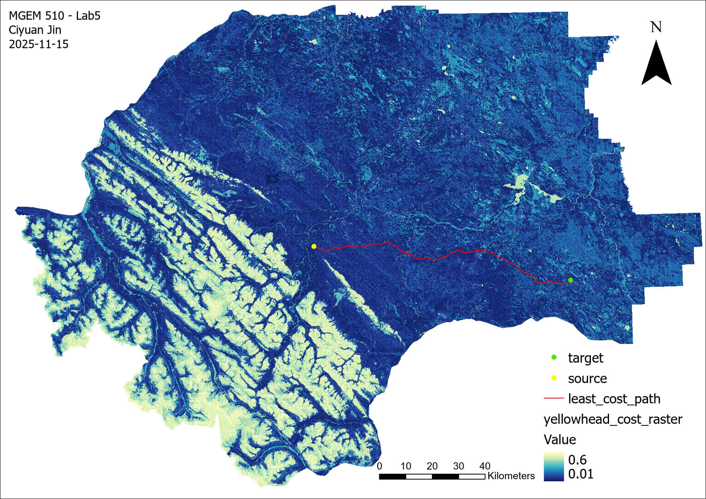
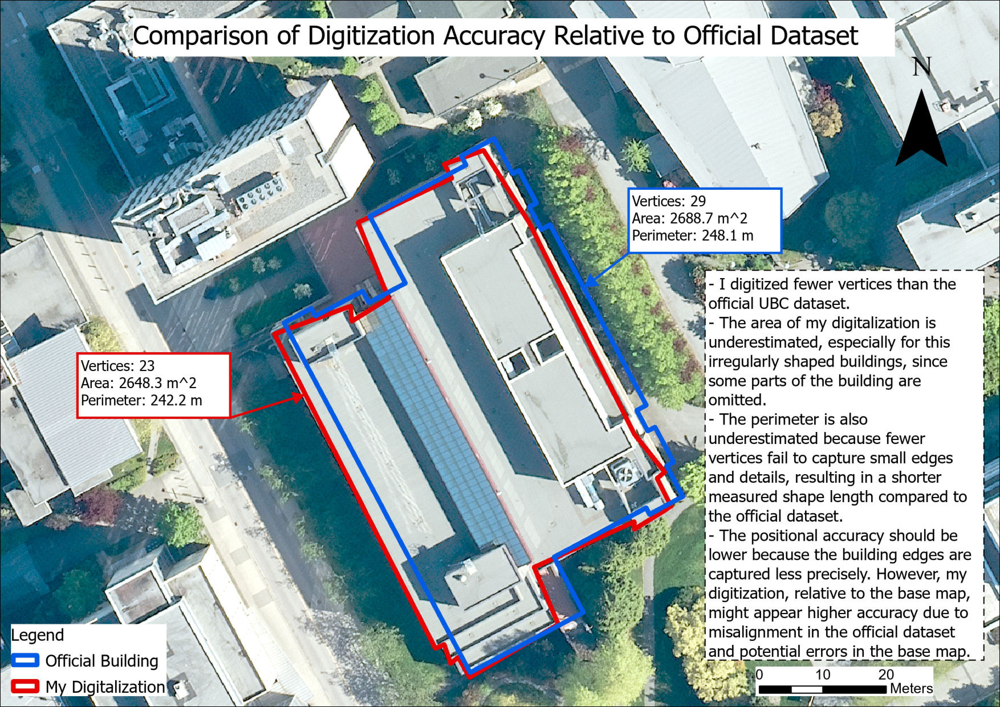

空间分析成果

灰熊栖息地连通性最小成本路径分析（加拿大艾伯塔省西部）

鲑鱼栖息地可达性水文网络拓扑分析

基于 Git + Kart 的地理空间数据版本控制编辑工作流
SQL 查询示例
-- 计算各林型 FSC 多边形15米缓冲区总面积
SELECT forest_type,
SUM(ST_Area(ST_Buffer(geom, 15))) AS buffered_area_m2
FROM fsc_polygons
GROUP BY forest_type
ORDER BY buffered_area_m2 DESC;
项目描述
- 通过 pgAdmin、QGIS、ArcGIS Pro 及 psql 命令行四种方式连接并查询多用户企业级 PostGIS 数据库
- 编写 SQL 查询语句，直接从远程 PostgreSQL 服务器筛选和提取空间图层数据，制作 5 个以上关系型数据图层的专业符号化地图版面
- 搭建本地 PostgreSQL 服务器，使用 GDAL 命令行工具（ogr2ogr、ogrinfo）在本地与远程数据库间导入/导出并重投影矢量数据（Shapefile ↔ PostgreSQL）
- 配置 Git + Kart，将分布式版本控制引入矢量空间数据管理；实践 branch/merge 及冲突解决等协作式空间数据编辑工作流
- 使用 GDAL 命令行工具及 QGIS 定义栅格研究区范围，结合土地覆盖、道路等多因子构建并重分类成本表面（cost surface），模拟灰熊（Ursus arctos horribilis）移动阻力；在 ArcGIS Pro 中开展最小成本路径分析，识别最优野生动物迁徙廊道
- 使用 ArcGIS Pro 水文分析工具（Flow Direction、Flow Accumulation、Stream Link）从 DEM 提取河流网络，应用网络拓扑（Network Topology）将水坝建模为阻断点，执行网络追踪分析，计算鲑鱼可达/不可达上游栖息地比例
- 完成地址地理编码：基于大温哥华地区参考数据构建自定义 Address Locator，批量将地址表转换为 Shapefile 点要素